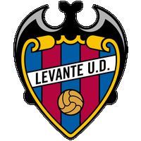
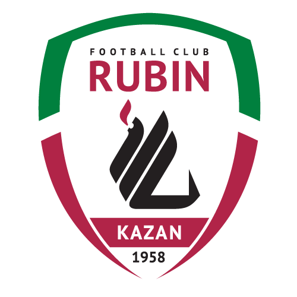
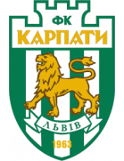
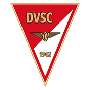
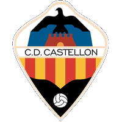
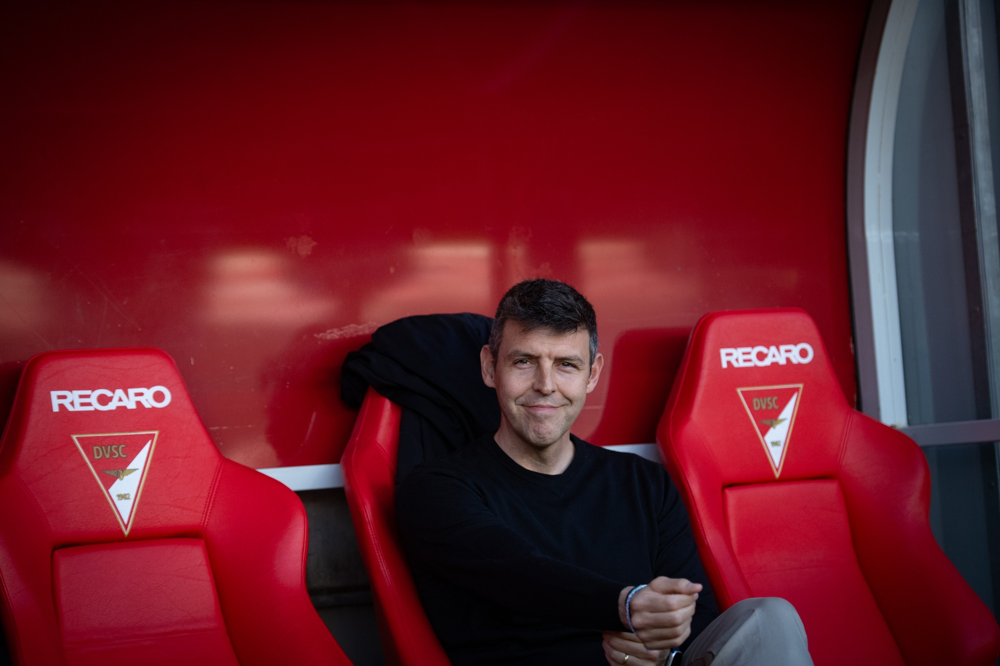

Liderazgo, Innovación y Rendimiento
Entrenador UEFA Pro | Experiencia Internacional de Alto Nivel






Entrenador UEFA Pro | Experiencia Internacional de Alto Nivel






Exjugador profesional (Villarreal CF) convertido en técnico especialista en el desarrollo táctico y la mejora personal del futbolista a todos los niveles.
Construcción de equipos altamente adaptativos basados en datos de rendimiento y evolución constante.
Recuperaciones rápidas en campo contrario limitando el tiempo de reacción del rival.
Conexiones veloces por el carril central para romper líneas defensivas eficientemente.
Ocupación racional de los espacios de remate con múltiples efectivos en zona de finalización.
Dominio de las caídas y rechaces en bloque alto para reiniciar ataques constantes.
Desarrollo basado en las relaciones personales y deportivas de los jugadores.
Monitorización de la progresión de minutos en entrenamiento y competición.
Desarrollo e integración constante de jóvenes de la academia en la élite.
Incremento continuo del valor financiero y deportivo del equipo y los individuos.
Crecimiento del Valor (DVSC)
Disponibilidad (5.5 lesiones/1000h)
Canteranos con 1er Equipo
Sesiones Individuales
Valor de plantilla máximo alcanzado de 9.43M€ (crecimiento espectacular del 64%).
Rutina de 25h/semana logrando un 92% de disponibilidad, muy por debajo de la media europea.
Consolidación de jóvenes talentos. Irrupción destacada de Erdélyi Benedek (990') y Flórián Cibla (757').
Implementación de identidad colectiva, aumento del valor de mercado y debut de 18 canteranos.
Liderando una de las canteras más prestigiosas de Europa.
Más de 125 partidos en Primera División Española.
Director de Metodología (Villarreal). Segundo Entrenador en Rubin Kazan (1/4 Final Europa League).
Haz clic en cada perfil para ver más detalles.
+ Ver perfil completo
+ Ver perfil completo
+ Ver perfil completo
+ Ver perfil completo
Información personal y vías de comunicación directa.
Huelva (Spain)
17 de Octubre de 1979